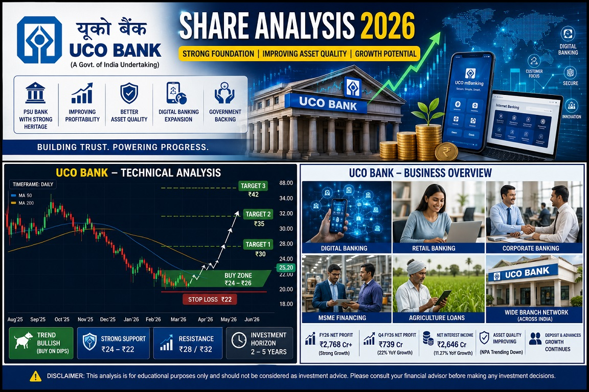

Is UCO Bank the next PSU banking opportunity? Explore the latest financial performance, growth drivers, valuation, technical analysis, target prices, risks, and long-term investment outlook.
₹25–26
₹32,000 Cr
₹35.08
₹22.22
11.4x
1.05x
UCO Bank is a Government-owned public sector bank focused on improving profitability, asset quality, and digital banking capabilities while expanding its lending portfolio.
Increasing demand for retail, housing, MSME and infrastructure loans.
Improved profitability and stronger balance sheets continue supporting PSU bank valuations.
Customer acquisition and digital adoption continue improving operating efficiency.
Strong ownership structure provides stability and confidence.
| Buy Zone | Stop Loss | Target 1 | Target 2 | Target 3 |
|---|---|---|---|---|
| ₹24–26 | ₹22 | ₹30 | ₹35 | ₹42 |
| Factor | Rating |
|---|---|
| Valuation | ⭐⭐⭐⭐⭐ |
| Growth Potential | ⭐⭐⭐⭐ |
| Asset Quality | ⭐⭐⭐⭐ |
| Dividend | ⭐⭐⭐ |
| Risk | ⭐⭐⭐ |
| Long-Term Opportunity | ⭐⭐⭐⭐ |
UCO Bank has undergone a significant transformation through improving profitability, better asset quality, and stronger operational efficiency. The stock trades at attractive valuations compared to many banking peers.
Investors looking for exposure to the PSU banking sector may find UCO Bank appealing due to its improving fundamentals and potential for re-rating if earnings growth continues.
₹24–26
₹30
₹35
₹42
Long-Term View: Bullish 📈
Investment Horizon: 2–5 Years
Risk Level: Moderate